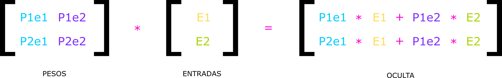

Reconhecimento De Imagens Com Uso De Redes Neurais
===
Nos dias atuais, cada vez mais empresas e pessoas estão buscando automatizar e
aumentar a velocidade e eficiência nos processos, e com a chegada do novo modelo
de indústria, conhecido como indústria 4.0, isso é elevado ao mais alto padrao
Desde um simples hardware, como um raspberry pi, até o mais caro servidor e
equipamento, tudo está conectado, e assim, o papel da inteligência artificial e
das redes neurais para as automatizações das tarefas é fundamental, uma das
áreas tecnológicas que vem com um crescente desenvolvimento de mercado e com
novos conceitos de futuro, trazendo consigo a geração de novas profissões e
modelos de negócios
Em meio a esse contexto, o objetivo da pesquisa é realizar o desenvolvimento de
uma rede neural que seja capaz de reconhecer imagens. Todo o processo de
desenvolvimento terá como base a linguagem de programação Python e demais
conhecimentos relacionados a programação e desenvolvimento de software
Os referenciais da pesquisa estão ligados às diferentes fontes relacionadas ao
tema, com artigos de muitos autores
Fundamentação Teórica
---
Na fundamentação teórica serão abordados assuntos que ajudarão a entender melhor
como as redes neurais funcionam, proporcionando um conhecimento técnico sobre o
que está ocorrendo por "debaixo dos panos"
O Que É Uma Rede Neural?
---
Nada mais é do que a tentativa de recriar neurônios humanos nos computadores
através de uma função universal de aproximação, ou seja, os neurônios humanos
passam a ser neurônios artificiais com a finalidade de aproximar entradas de uma
saída esperada corrigindo-se quando necessário
Como As Redes Neurais Funcionam?
---
As redes neurais funcionam em um sistema de camadas. Existem 3 camadas:
- Camada de Entrada: Onde ocorre as entradas de dados
- Camada Oculta: Onde ocorre o processamento dos dados
- Camada de Saída: Onde é devolvida a resposta da rede de acordo com as
informações de entrada
O aprendizado acontece da seguinte forma: os valores da entrada são
multiplicados com os pesos que ficam entre a camada de entrada e a camada oculta
e o resultado é armazenado no nó da camada oculta, o valor armazenado é
multiplicado pelo peso que fica entre a camada oculta e a camada de saída e o
novo valor é comparado com uma saída pré-definida. Os pesos são ajustados de
acordo com que a rede vai errando, para que na próxima vez que a mesma entrada
for feita a rede acerte ou fique o mais próximo possível do resultado esperado
A rede neural criada tem um aprendizado supervisionado, ou seja, é dado uma
imagem como exemplo e a rede é treinada a reconhecer o elemento, qualquer outro
elemento não será reconhecido, a menos que ele seja passado como exemplo de
treinamento para a rede
Feedforward
---
Feedforward é um tipo de rede neural assim como as demais, trabalhando com
camadas de entrada que são conectadas a camadas escondidas de processamento. O
algoritmo de feedforward é o responsável por passar os dados da camada de
entrada para a camada oculta e da oculta para a camada de saída
Backpropagation
---
Backpropagation é formado por conjuntos de equações que corrigem os pesos de
cada conexão dos neurônios apresentados na rede, com isso realiza uma retro
propagação dos erros encontrados nos neurônios de saída, com a intenção de
reduzir a diferença entre o padrão encontrado e o padrão desejado. O processo de
aprendizado da rede neural acontece no backpropagation
Função De Custo
---
A função de custo é formada pelo somatório do erro médio quadrático de cada
padrão individual
A função de custo caracteriza o quanto a rede está errando, com isso o objetivo
é diminuir o resultado da função de custo, pois diminuir o resultado caracteriza
que a rede está acertando mais
A fórmula utilizada será a seguinte:
MSE = (resposta correta - saída) ** 2
MSE (Mean Squared Error), é o valor individual do erro de cada neurônio de
saída. O fato da equação estar ao quadrado é para hipersensibilizar os erros
pois os valores são muitos pequenos
Multiplicação Matricial
---
A multiplicação de matrizes é realizada da seguinte forma: multiplica-se as
linhas da primeira matriz pelas colunas da segunda matriz com a condição de que
o número de linhas da primeira matriz seja igual ao número de colunas da segundo
matriz
Aplicando a multiplicação matricial o exemplo acima fica da seguinte forma:

BIAS
---
O bias (tendência) é um número qualquer que tem a função de acelerar o processo
de aprendizado da rede neural, essa constante possui o papel de centralizar a
curva da função de ativação em um valor conveniente. Caso seja positivo, o
movimento do gráfico é realizado para a esquerda, diminuindo o valor do eixo X.
Porém, caso seja negativo, o movimento do gráfico é feito para a direita,
aumentando o valor do eixo X
Função De Ativação
---
O objetivo da função de ativação é limitar a amplitude de saída do neurônio, ou
seja, o valor obtido no somatório é normalizado dentro de um intervalo fechado,
podendo ser interpretado também como a probabilidade do resultado.
A função de ativação que será utilizada será a sigmoid, basicamente o que ela
faz é colocar todo valor passado para a função no intervalo entre 0 e 1
Notas De Publicação
---
Este conteúdo era parte integrante de uma pesquisa para trabalho de graduação,
parte do conteúdo requerido pelas universidades como referências e diagramação
foram removidos